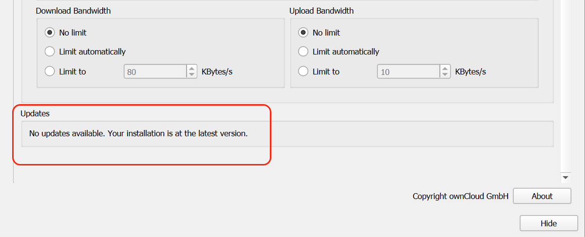
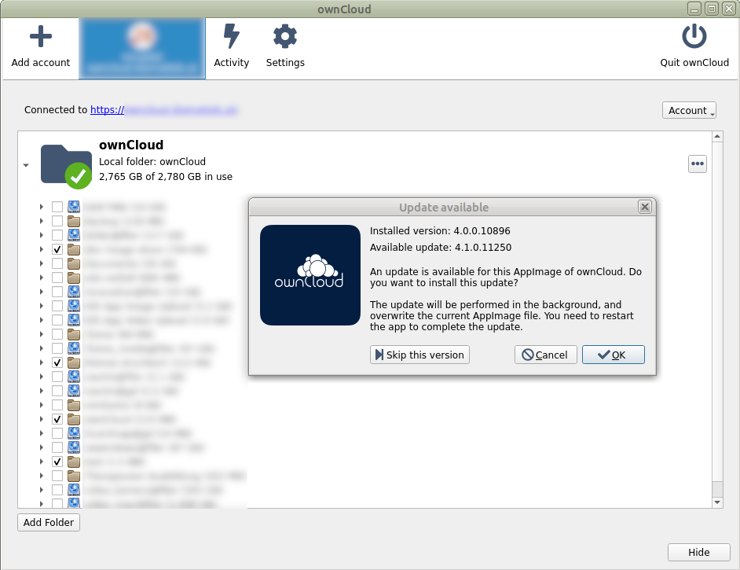

Automatic Updating of the Desktop App
Introduction
The Automatic Updater ensures that you always have the latest features and bug fixes for your ownCloud Desktop App. The Automatic Updater updates only on macOS and Windows computers; Linux users only need to use their normal package managers. However, on Linux systems the Updater will check for updates and notify you when a new version is available.
| When planning to upgrade from a Desktop app release ⇐ 2.5 to a release >=5.0 you must make an intermediary step to release 4.0 before doing the final upgrade. |
Basic Workflow
The following sections describe how to use the Automatic Updater on different operating systems.
Windows
The ownCloud Desktop App checks for updates and downloads them when available. You can view the update status under in the ownCloud Desktop App.

If an update is available and has been successfully downloaded, the ownCloud Desktop app starts a silent update prior to its next launch and then restarts itself. Should the silent update fail, the Desktop app offers a manual download.
| Administrative privileges are required to perform the update. |
macOS
If a new update is available, the ownCloud Desktop app initializes a pop-up dialog to alert you of the update and requests that you update to the latest version. This is the default process for macOS applications.
Linux
-
Linux distributions provide their own update tools.
The ownCloud Desktop app on a Linux operating system does not perform any updates on its own. The client will inform you () when an update is available. -
AppImages
AppImages provide an auto-update feature. The check process takes place when (re)starting the AppImage. If a new AppImage is found, you get the following example screen where you can decide whether to install the new image or not. Updates are in-place and do not produce a new file name.
Preventing Automatic Updates
In controlled environments, such as companies or universities, you might not want to enable the auto-update mechanism, as it interferes with controlled deployment tools and policies. To address this case, it is possible to disable the auto-updater entirely. The following sections describe how to disable the auto-update mechanism for different operating systems.
Preventing Automatic Updates in Windows Environments
Users may disable automatic updates by adding this line to the [General] section of their owncloud.cfg files:
owncloud.cfg is usually located in C:\Users\<USERNAME>\AppData\Roaming\ownCloud\owncloud.cfg.
skipUpdateCheck=trueWindows administrators have more options for preventing automatic updates in Windows environments by using one of two methods. The first method allows users to override the automatic update check mechanism, whereas the second method prevents any manual overrides.
To prevent automatic updates, but allow manual overrides:
-
Edit these Registry keys:
a. (32-bit-Windows) HKEY_LOCAL_MACHINE\Software\ownCloud\ownCloud
b. (64-bit-Windows) HKEY_LOCAL_MACHINE\Software\Wow6432Node\ownCloud\ownCloud-
Add the key
skipUpdateCheck(of type DWORD). -
Specify a value of
1to the machine.
To manually override this key, use the same value in HKEY_CURRENT_USER. To prevent automatic updates and disallow manual overrides:
| This is the preferred method of controlling the updater behavior using Group Policies. |
-
Edit this Registry key:
HKEY_LOCAL_MACHINE\Software\Policies\ownCloud\ownCloud-
Add the key
skipUpdateCheck(of type DWORD). -
Specify a value of
1to the machine.
| Enterprise branded Desktop Apps have different key names, which are set during the branding process using the Application Vendor and Application Name fields. |
Your key names look like this:
HKEY_LOCAL_MACHINE\Software\Policies\myCompanyName\myAppNamePreventing Automatic Updates in macOS Environments
You can disable the automatic update mechanism, in the macOS operating system, by copying the file owncloud.app/Contents/Resources/deny_autoupdate_com.owncloud.desktopclient.plist to /Library/Preferences/com.owncloud.desktopclient.plist.
Preventing Automatic Updates in Linux Environments
Because the Linux Desktop App does not provide automatic updating functionality, there is no need to remove the automatic-update check. However, if you want to disable it, edit your Desktop App configuration file: $HOME/.config/ownCloud/owncloud.cfg. Add this line to the [General] section:
skipUpdateCheck=true